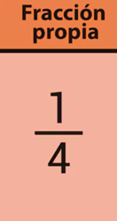
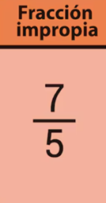
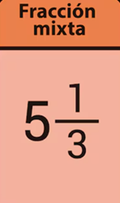

FRACCIONES
¡Hola! Hoy te voy a explicar sobre las fracciones. Empecemos con los conceptos básicos.
¿QUÉ ES UNA FRACCIÓN?
Una fracción es una forma de representar una parte de un todo.
PARTES DE UNA FRACCIÓN
Una fracción tiene dos partes principales: el numerador (arriba) y el denominador (abajo).

FRACCIONES PROPIAS
Fracción propia: el numerador es menor que el denominador.

FRACCIONES IMPROPIAS
Fracción impropia: el numerador es mayor que el denominador.

FRACCIONES MIXTAS
Fracción mixta: combina un número entero y una fracción.

CONSEJO ÚTIL
Simplifica las fracciones siempre que sea posible para facilitar los cálculos.
¡Eso es todo! Ahora lo pondremos en práctica.